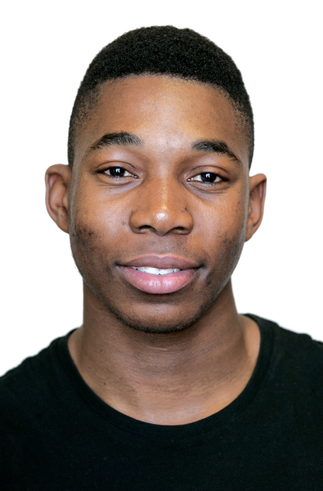

Thubalethu Ndibali

Summary
Highly motivated and driven person in providing a professional care service to children and clients with disability and aged care. A proven ability to work with clients in implementing effective programs to help them develop skills needed for independent living. Comfortable working in one-on-one situations with people of varying needs. Seeking a role with a quality service provider where I can assist people reach their potential and lead fulfilled lives.
Education
- Certificate 3 in Aged Care
- Certificate 3 and 4 in Disability
- First Aid Certificate
- Working with Children's Check
- Manual Handling Certificate
- Certificate 3 in Entertainment
- Valid Police Check
- NSW Driving License
- Bachelor of Dance
- Certificate 3 in IT
Work Experience
2014 - 2016 (Assistant in Nursing), Acacia Aged Care Centre, Marrickvile
- Providing perasonal, physical and emotional support to elderly residents
- Manual Handling (operating hoists)
- Observing the health of the elderly, documenting and reviewing care charts
- Liasing with other health professionals about the conditions of the residents
2017 - 2024 (Support Worker), Miroma Disability Centre, Vaucluse
- Providing personal care, physical and emotional support to clients
- Organising recreational activities such as running a dance program and community access
- Writing client progress notes
- Implementing ideas such as performance themes for festivals
2018 - 2022 (Dance Instructor), Dance Central , Surry Hills
- Creating dance routines weekly for class
- Leadership skills such as applying techniques to help students retain choreography
- Exercises done in class helping students to develop a fit body
2019 - 2020 (Lifestyle Support Worker) Uniting Care , Croydon
- Assisting clients with independent living skills such as cooking and laundry
- Documenting clients' goals, challenges, improvements and progress
- Reading and reviewing care charts to observe how to cater to each client's needs
2021 - 2024 (Support Worker), PsychCentral, Bankstown
- Assisting clients with challenging behaviours redirect through positive reinforcement
- Reviewing care plans to stay updated with client's needs and goals
2024 - Current (Home Care Worker), Montefiore Double Bay
- Assiting clients with companionship, personal care and independent living in their own homes
Skills
- Excellent leadership skills and supervisory experience
- Personal care, emotional care and preparing day to day activities
- Organising recreational activities
- Writing reports and maintaining confidentiality
- Problem solving skills
- Competent computer skills
- Conflict resolution
Hobbies
Contact Me